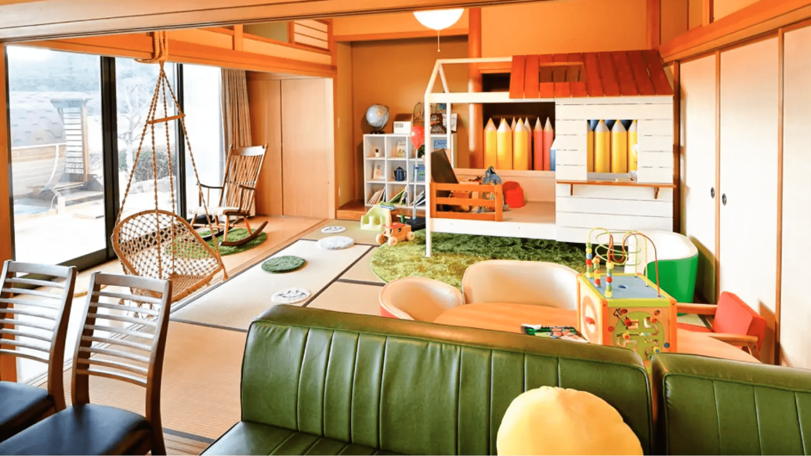

集って遊んで農業再生
苦境を脱して農業を再生し、町を元気にするアイデアとチャレンジ精神
循環･自然にこだわる養鶏で県外にも知られるようになった相馬市の大野村農園。いくつもの壁を乗り越えてもまた新たな壁が。それを乗り切るのは慣例にこだわらない柔軟な発想とそれを実行するバイタリティです。
大野村農園
苦境はアイデアと行動力で乗り切る
菊地将兵さんと妻の陽子さんが営む大野村農園は「究極の平飼い・自然卵養鶏法」を謳う「相馬ミルキーエッグ」で知られています。地元でとれた米や野菜などを餌に用いて、循環にこだわり手間を惜しまない飼育が注目され、卵は4か月先まで予約で埋まっているほどです。 その一方で循環型農業でさまざまな野菜も作ってきましたが、昨今の諸物価高騰で野菜作りは今難しい局面に。 「物価高騰のしわ寄せをいちばん受けるのが、価格を上げにくい野菜なんです。農協や市場が何とかしてくれればという農家もありますが、儲からないなら儲かるように自分でするしかない」と将兵さん。そこで自ら新たに直売所を立ち上げ、他の野菜農家にも声をかけ、手数料ゼロで販売するというチャレンジに踏み切ることにしました。その拠点が、直売所兼ゲストハウスの「アンブレラ」です。
ゲストハウス「アンブレラ」は遊べる子ども食堂。また大人が楽しめる“大人食堂”でもある
大人も子どもも「遊び」が大切
準備中のハウスを訪れてみるとカラフルな子供の遊具がいくつも設置され、保育所のような空間。そして庭には本格的な薪焚きのサウナが。 「5年ほど前から、自宅で子ども食堂をやっていたんです。それをここで本格的にやろうと思いました。そして大人も遊べる大人食堂にしたい。僕自身遊ぶのが好きだし、大人がストレスを溜めると子どもにもよくないと思うんです」 ハウスの前に広がる田んぼで農業体験ができるよう、米作りも計画中。緑風の吹き抜ける田園の傍らで、親子の楽しげな声が弾む。そんな“楽しい居場所”が地域を元気にしてくれるはずです。
菊地 将兵 大野村農園
就農したのは震災後です。相馬市は農業を継続できた地域でしたが、原発事故にともなう風評被害の影響で、農業を諦める人が多かった。そんな中、金髪の26歳が市役所で新規就農したいと言ったら『えっ』と驚かれました。米農家でバイトしながら野菜を作りましたが、何をやっても売れなかった。それでも続けてきたのは地元に育てられたという思いからです。農業をやっていた祖父母や近所の人によくしてもらった。諦めるにしてもやるだけやってから諦めようと思ったんです。